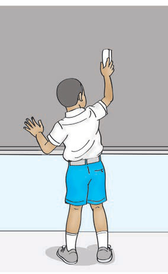
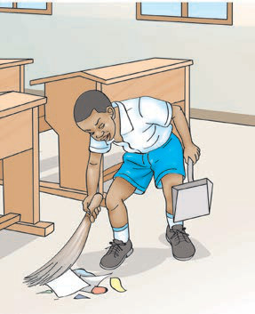

Instructions | Actions in pictures | Oral or sign responses |
Open your book. |  | I am opening my book. |
Clean the board. |  | I am cleaning the board. |
Sweep the floor. |  | I am sweeping the floor. |
Instructions | Actions in pictures | Oral or sign responses |
Open your book. | | I am opening my book. |
Clean the board. |  | I am cleaning the board. |
Sweep the floor. |  | I am sweeping the floor. |